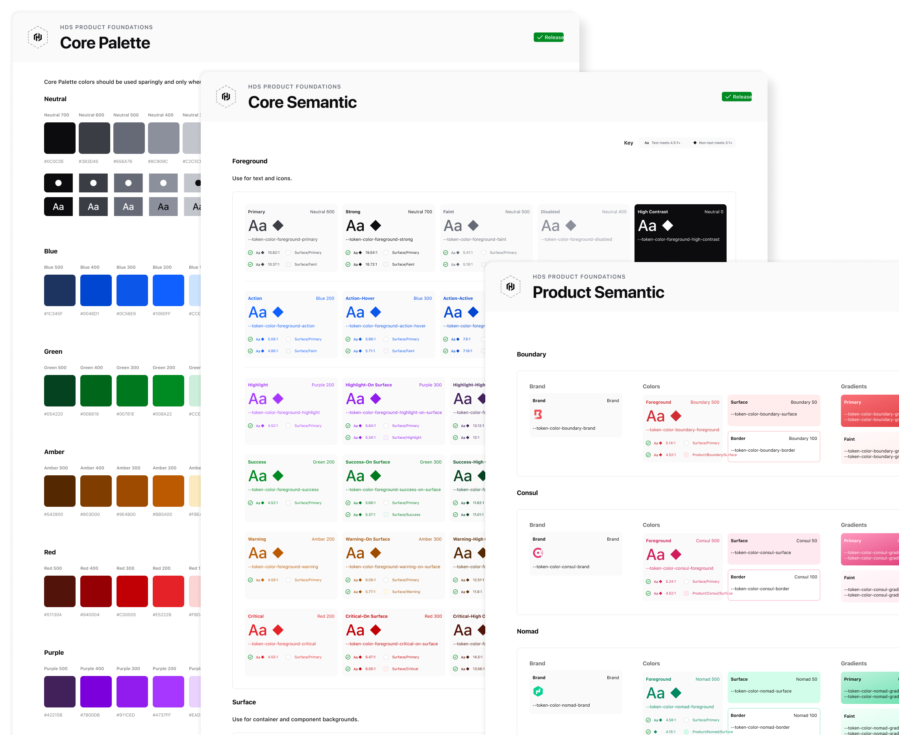
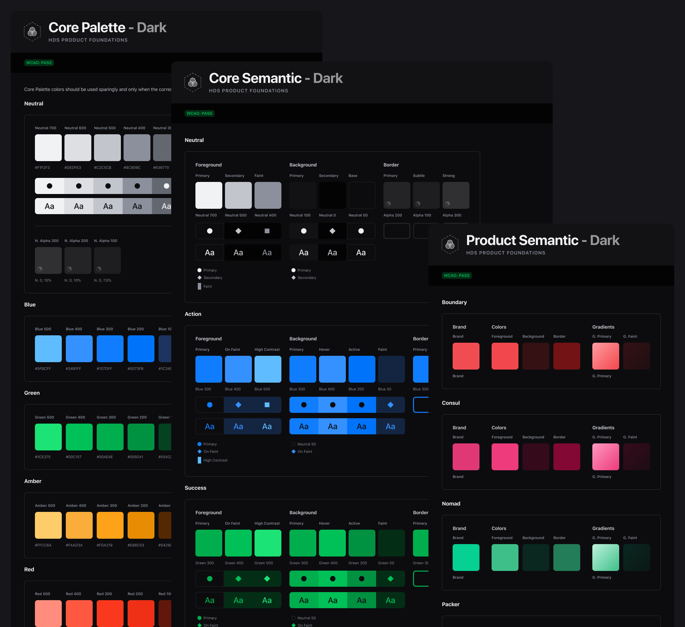
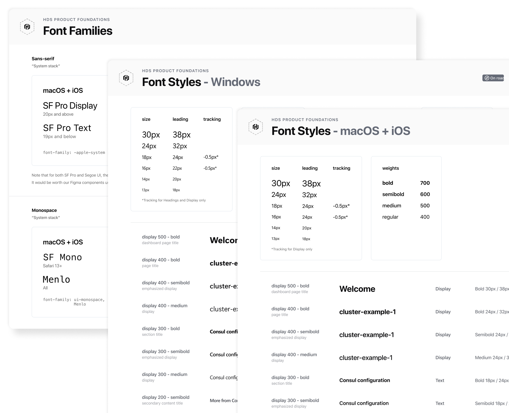
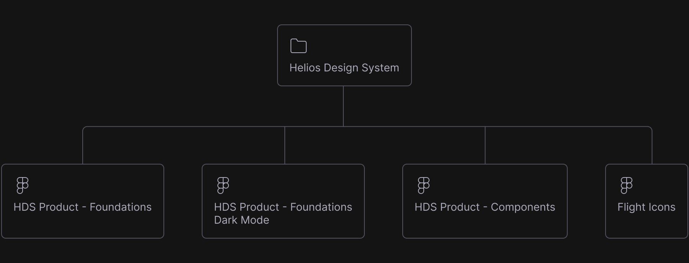
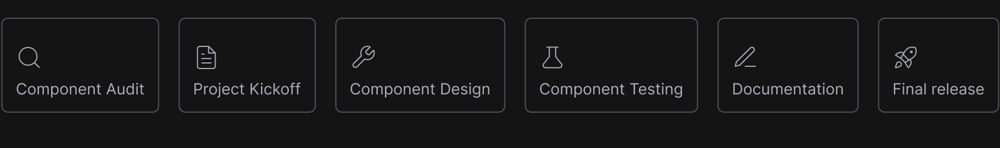
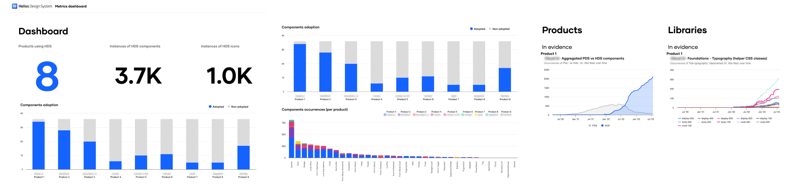

Helios Design System
An open source design system to design and implement consistent and accessible product experiences.

HashiCorp provides consistent workflows to provision, secure, connect, and run any infrastructure for any application.
In 2022 HashiCorp introduced their Cloud Platform to provide managed versions of HashiCorp's infrastructure automation tools, allowing organizations to leverage the power of their products without managing the underlying infrastructure themselves.
Problem
Building a platform that not only relies on the CLI but also on dedicated dashboards and complex workflows demanded a design system that could scale with the platform and their standalone products as well.
Solution
A new initiative was launched to build a robust and scalable design system to serve the entire suite of products, with a focus on the cloud platform as the pilot.
My role
I joined as part of the team assembled to build and maintain the system. As a member of this small team, my role as a system designer was to help establish the foundations, build and document accessible components, collaborate with other product designers and engineers, provide support, and advocate for the design system.
Strategy
After conducting an exhaustive audit of the existing UI, we decided to start with color, typography, and elevation as a starting point for the foundations. This approach allowed us to experiment and define not only the foundations but also the token architecture.
Color palette and Type system
Our system is powered by three main libraries: the product foundations, components, and Flight icon library.
  Libraries
Our system is powered by three main libraries: the product foundations, components, and Flight icon library.
Components
As a member of the core team, one of my main responsibilities was to collaborate with engineers on the definition and creation of new components in both design and code. Some of the components I designed and helped build were:
Process
Our process for building components is broken down into six steps:
Component audit
I conduct an audit across our products together with our design and engineering ambassadors. This helps inform the design and requirements of the component or pattern.
Project kickoff
This is used to align on project scope, timelines, milestones, and as a space to discuss any open questions. We use a kickoff document and a CRD (Component Requirements Document) as artifacts to communicate decisions and align on accessibility, API, architecture, etc.
Component design
At this stage, I start to explore and experiment, going through different types of reviews with designers, engineers, and other stakeholders as necessary. During this phase, we design and build the component in Figma as well as in code.
Component testing
Component testing allows other designers to test the Figma component and provide concrete feedback on whether what we are building is usable and meets the consumers' needs. For engineers, the process is a bit different as it is more challenging to have something up and running for them to test.
Documentation
In tandem with the component build process and testing, I start writing documentation directly in Markdown by opening a pull request in GitHub to have it reviewed by other members of the team, and eventually merge it to master. Our documentation artifacts include:
- Design guidelines
- Specifications
- Relevant accessibility details
- Stickersheet and Figma tips as necessary
Results
Within the first year, we saw an uptick in design and development productivity and sprint velocity, especially in implementation time. While we decided to focus most of our efforts on one product, we started working with other teams on migrating or adopting the design system as part of our adoption strategy.
